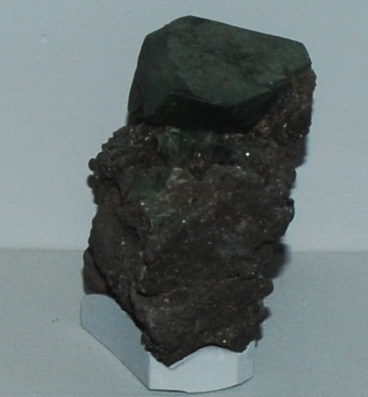

|

| (Fe, Mg, Mn)3(PO4)2.4H2O
This sample of ludlamite is displayed in the Smithsonian Museum of Natural History. Ludlamite is a phosphate mineral of iron, magnesium and manganese with the composition (Fe, Mg, Mn)3(PO4)2.4H2O. The sample at left is about 3 cm across and is from Blackbird mine, Lemhi County, Idaho.
|